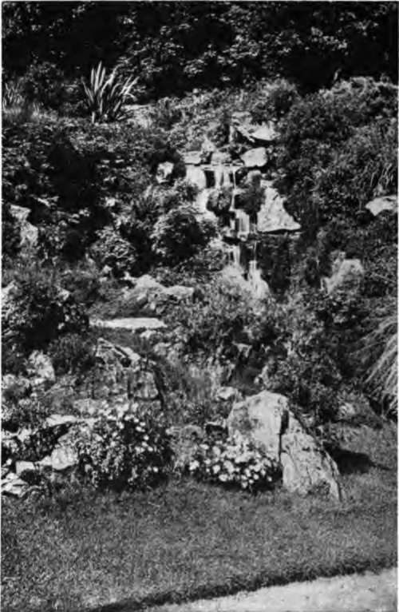

Chapter XXII. Birds And The Flower Garden
Description
This section is from the book "Flower Gardening", by H. S. Adams. Also available from Amazon: Flower gardening.
Chapter XXII. Birds And The Flower Garden
More birds would frequent the flower garden if there were fewer cats and dogs roaming around. These much too numerous domesticated animals, because it is their nature, and children, because they are innocently unthoughtful, frighten away—if they do not kill—some of the birds that would be only too glad to call from time to time, and perhaps settle down for the summer.
For one, there is that most sociable of spring's harbingers—the song sparrow. He will come in February to stay until November, if you do not let him be frightened away. And he will sing the while, day after day, as if his very soul were in the doing of it for you. But you must give him a bit of nearby thicket wherein to let him hide a nest—or imagine that he is hiding it. Then he and his mate and their little ones will run around the garden and feel quite at home in every part of it. The catbird, who is a fine singer when he takes the notion, may also be persuaded to nest close by the garden if there is a higher thicket; he likes housekeeping in a bush of the common barberry.
Different birds require different kinds of encouragement The black-winged yellow bird, or American goldfinch, is sure to come in summer if there are cornflowers going to seed. So long as the seeds are good pickings, count on his company. And among the blue blossoms he is one of the prettiest of garden sights. Always have some cornflowers for the goldfinches. Later the juncoes and chickadees will be frequent visitors if you have been considerate enough to plant a few sunflowers for them. The big Russian sunflower is best and with careful arrangement is not inimical to beauty in a garden picture. Have enough of them somewhere on the place to attract the birds until late autumn.
In the spring the male purple grackle, with the lustre fresh on his plumage, is a beautiful figure in the garden. The grackles and starlings walk leisurely over the beds and borders and the robins hop about—all in search of earth food, and not over-timid. The chipping sparrow, whose nest may be in the clematis vine that shades the piazza, and the yellowhammer are likewise neighborly; the rose-breasted grosbeak and great-crested flycatcher drop in occasionally; the bluebird, warbling vireo, kingbird, bluejay, downy woodpecker and Baltimore oriole spend much time in the trees overhead; the ruby-throated humming bird buzzes around the flowers day in and day out, resting at long intervals on a branch, and it may be that the screech owl, looking for his prey, is in the garden of a night.
The starling is very fond of the fruit of the common elder, which makes a handsome shrub, and the robin of the Russian mulberry and wild cherry. The mulberry and cherry arc trees, but not too large to be worked into a garden scheme. These three fruits ought to be on every place for the birds —not only to encourage them to stay around and feed on insects but to keep their minds off choicer fruit. South of Washington the china tree (Melia aze detach) is a fine attraction for the birds. In the North the mountain ash, red cedar and dogwood are sure to keep robins and other birds around late in the year.
Water is always a great attraction to the birds; they like to drink it and they like to bathe in it.
Always the English sparrow stays by the garden; he does some good there and no particular harm. He is pugnacious, but is less responsible for keeping other birds away than are the presence of disturbing cats, dogs and the absence of attractive food and shelter. If food be placed in the garden in winter the junco, chickadee, blue jay, tree sparrow, fox sparrow, song sparrow and starling will all share the spread with the English sparrow; the downy woodpecker also, when the table is a piece of board fastened to a tree. For the birds in winter tie a piece of suet on a tree or shrub, out of the reach of cats, from time to time and throw on the garden walk or on an elevated bird table, breadcrumbs and mixed bird-seed.
Water is always a great attraction to the birds; they like to drink it and they like to bathe in it. Running water is best, but a still bird basin will do if properly cared for. Fill it every night and place it where there is shade. The water must either be very shallow or be made so in places by the use of stones; garden birds bathe, they do not swim. Hedges, especially untrimmed ones, and all shrubbery in the form of thickets appeal strongly to birds. To them birds can run or fly to cover, they are good for nesting and roosting purposes and the ground beneath is just the place for scratching. Wherever circumstances permit, it is an excellent plan to create thickets as bird coverts; the company of the songsters, let alone the destruction of insect pests, will pay for the trouble over and over again.
What birds are willing to do, even without the allurement of water, is easily proven by what they did in one instance. Either within a few feet of the garden or in a tree just above it the starling, purple grackle, song sparrow, English sparrow, chipping sparrow, robin, bluebird, English grosbeak, yellow hammer and screech owl have all nested at one time or another in a space of less than six years. Adding the mere callers, the bird guests have exceeded thirty—and this where conditions are suburban rather than rural.
Continue to: